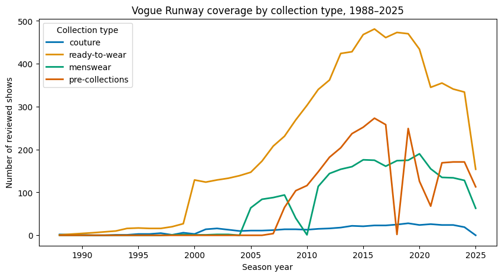
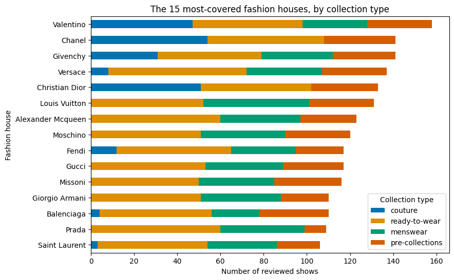
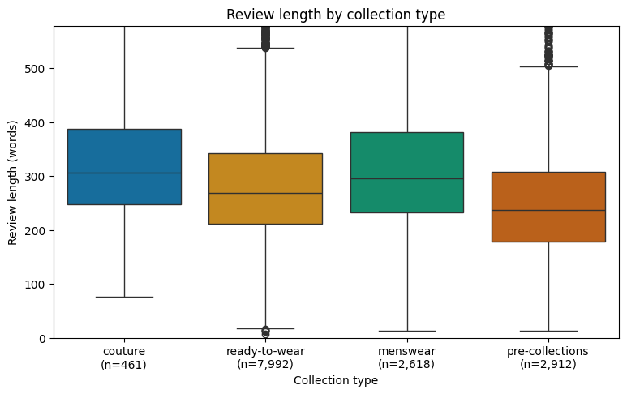
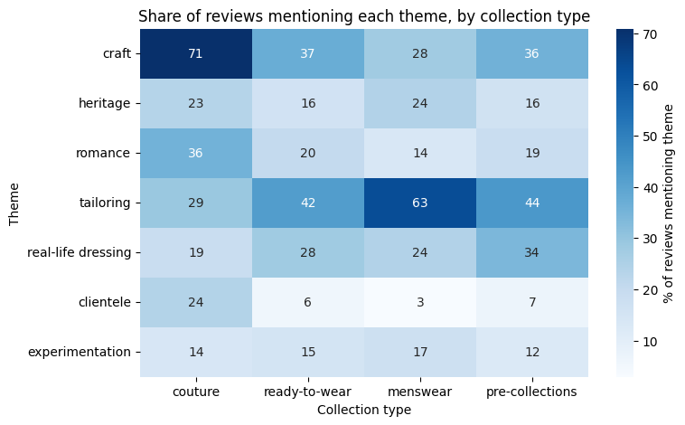

How does Vogue Runway tell different stories of luxury fashion?
I compared how Vogue Runway reviews couture, ready-to-wear, menswear and pre-collections, across 37 years of reviews.
- Fashion editors who want to see which stories each type of collection usually gets.
- PR teams who want to anticipate how a collection is likely to be written about.
- Fashion students learning the vocabulary of fashion criticism.
- Anyone curious about fashion, even with no background, who wants to see how the industry talks about its own clothes.
FashionDB on Hugging Face (traopia/FashionDB), collected from Vogue Runway. Each row is one show: its house, season, collection type, reviewer, runway photos and the full written review.
How do Vogue Runway's reviews differ across couture, ready-to-wear, menswear and pre-collections?
- How is coverage distributed across collection types over time?
- How does review length vary across collection types?
- Which themes set the collection apart?
I want to find out whether Vogue Runway covers and describes collection types differently, using both numbers and the review text.
Couture
Made-to-measure clothes from the Paris couture houses, shown twice a year.
Ready-to-Wear
The main womenswear collections, shown each spring and fall.
Menswear
Men's collections, shown on their own calendar each season.
Pre-Collections
Resort and pre-fall: smaller collections shown between the main seasons.

(a screenshot of your Streamlit app)
Filter 13,983 reviews yourself
A Streamlit app that answers each question on its own page. Pick collection types, years and houses, and read real review excerpts for any theme.
Click to View →From 14,287 shows to 13,983
Where the reviews come from, how I cleaned them, and what's missing.
→Three questions, three charts
Coverage, review length and themes, checked against 40 reviews I read.
→A/B test
A proposed test of theme-based browsing on the Vogue Runway archive.
→The Data
37 years of Vogue Runway reviews, from 380 fashion houses.
Source
FashionDB on Hugging Face (traopia/FashionDB). The dataset's authors collected it from Vogue Runway's website; their code is on GitHub.
One row is one fashion show as covered on Vogue Runway: its house, season, collection type, reviewer, runway photos and the written review.
What I measured
- Numbers: year, review length in words, number of runway photos
- Categories: fashion house, collection type, season, reviewer
- Text: the written review of each show
From 14,287 shows to 13,983
The dataset had no single column for collection type: resort and pre-fall were only labelled in the season column. I combined the two, then merged resort and pre-fall into pre-collections, since they behaved almost identically.
How I tagged themes
I wrote a short word list for each theme. A review counts toward a theme if it uses any of those words at least once. Then I read 40 reviews, 10 from each collection type, to check that the tags made sense.
Unique Craft
embroider, handmade, hand-, atelier, craft, artisan, beaded, beading
Sharp Tailoring
tailor, suiting, blazer, lapel, pinstripe, trouser
Romantic
romantic, romance, dream, fairy, ethereal, delicate
Everyday Dressing
wearable, customer, everyday, practical, wardrobe, commercial
House Heritage
archive, heritage, founder, legacy, tradition, house code
Experimental
experiment, avant-garde, conceptual, deconstruct, radical, innovat
Clientele
client (split out after I found couture uses it for private buyers)
Words match at the start, so “tailor” also catches “tailored” and “tailoring.”
- Collection type is split across two columns. The dataset didn't have one column saying which kind of collection each show was, so I had to build it myself. The category column had couture, ready-to-wear and menswear. The season column was the only place that said resort or pre-fall. For those shows, category was left empty.
- Missing reviews and reviewers. 81 menswear shows have no real review, and 308 shows have no reviewer named.
- Some shows removed. I removed 223 bridal and regional fashion week shows because they are outside my question.
- Very uneven groups. There are 7,992 ready-to-wear shows but only 461 couture.
- Not all of fashion. Only the houses in FashionDB that Vogue covered, not all of fashion or everything Vogue has published.
- Words, not clothes. A show counted as romantic means the critic used a romantic word, not that the clothes look romantic.
- Keyword matching misses meaning. One review counted as craft for the word “crafty”, while describing a move away from that look.
- Coverage changes over time. Coverage falls after 2016 and drops sharply in 2025. The 2025 drop is because the data was collected partway through the year. The 2018 pre-collections gap appears to be missing data. The decline around 2020 may partly reflect real changes like the pandemic, but it also reflects that FashionDB follows a fixed list of houses, so newer labels are missing.
- Why reviews differ is unknown. Length and wording could depend on the critic, the year or the house, not only the collection type.
- Photos are a rough measure. Photo counts stand in for the number of looks and can include detail shots.
- Copyrighted text. The reviews are Vogue's copyrighted writing, so this project loads them from Hugging Face instead of republishing them.
The Findings
Three questions, four charts, and what the reviews actually say.
Coverage and review length

How is coverage distributed across collection types over time?
Reviewed shows per year for each collection type.
Ready-to-wear is covered far more than any other type, and coverage falls after 2016.
The 2025 drop is because the data was collected partway through the year, and the 2018 pre-collections gap is missing data.

Which houses supply the reviews?
The 15 houses with the most reviewed shows, split by collection type.
So a small group of houses shapes much of the data.

How does review length vary across collection types?
Review length in words for each type. The line in each box is the typical (median) review.
Couture and menswear get the most space. Pre-collection reviews are about 30% shorter.
Typical review: couture 306 words, menswear 296, ready-to-wear 269, pre-collections about 237.
What themes set the types apart?

What themes set the collection apart?
The share of reviews in each type that use a theme's words. Darker means more common.
Couture is written as craft, menswear as cut, and pre-collections as the customer.
Craft words appear in 71% of couture reviews, tailoring in 63% of menswear, and everyday dressing in 34% of pre-collections.
To check the keywords, I read 40 random reviews, 10 from each type.
“…long, flowy chiffon gowns traced with lines of crystal and sequin embroidery.”
“…a navy pinstripe suit and an elegantly elongated black overcoat…”
“…something accessible… to pull in the next generation of customers.”
Not everything fits
4 of the 10 couture reviews had no craft words, and one pre-collection review did: “a stunning silk wrap gown with silver beaded trim” (Gucci, 2011).
Checking one keyword
In couture, “client” means a private buyer, not an everyday customer. Taking it out of everyday dressing changed couture from 37% to 19%.
Revisiting a choice
I merged resort and pre-fall. Their typical reviews are almost the same length (236 and 238 words), so merging doesn't change the finding.
Explore
A short walkthrough, then the live dashboard to try yourself.
A short tour
Filter it yourself
Each page answers one question. Use the filters under each question to change the collection types and years.
If the dashboard shows a “wake up” button, click it and wait about 30 seconds: free apps sleep when nobody is using them.
A/B Test
If reviews already describe collections through themes, could those themes help new readers explore?
My analysis found recurring themes that differ by collection type, but Vogue Runway's archive is browsed by designer search, an alphabetical list and the fashion calendar. That works best for people who already know which designers to look for.
The analysis shows these themes exist in the reviews. It can't show whether visitors would use them to browse. That's what this test would measure.
Version A · today
The current Fall 2026 Ready-to-Wear archive page: a grid of collections, designer search and an alphabetical list of houses.
Version B · one change
The same page with one new row above the grid, “Explore by Collection Story.” Picking a theme (Unique Craft, Sharp Tailoring, Romantic, Everyday Dressing, House Heritage) filters the collection cards.
“Adding theme-based browsing will lead first-time visitors to explore more runway collections, because they can begin with an aesthetic they recognize rather than needing to know a particular designer, season or category.”
Who
First-time archive visitors (no visit in 90 days), randomly split 50/50 and kept in the same version.
Main measure
Share of visitors who open 3+ different collections within 7 days.
Success
At least 5 percentage points higher in B, enough to justify maintaining the theme labels.
Watch for
The 14-day return rate. B could boost clicks without visitors finding what they want.
What could mislead
- People may click the new row just because it's eye-catching.
- Theme labels may be too broad. Editors would check a sample before launch.
- Results may not apply to fashion experts, who may prefer browsing by designer.
Decision
- Adopt B if exploration rises without lowering the return rate.
- Revise and retest if exploration rises but the return rate falls.
- Keep A if B shows no meaningful improvement.
What's Next
What I can conclude, what it means, and where it could go.
What I can conclude
- Vogue Runway uses a different vocabulary for each collection type: craft for couture, cut for menswear, the customer for pre-collections.
- Couture and menswear get more space than pre-collections.
- These are patterns in the writing, not proof of why they exist.
Why it matters
- Editors can see which stories each collection type tends to get, and which it rarely does.
- PR teams can anticipate how a collection is likely to be framed.
- Students get a vocabulary map of how fashion is written about.
Further research
- Compare reviews by the same critic across collection types, to separate critic from type.
- Add newer houses missing from FashionDB, and other publications, to see if the pattern holds.
- Run the A/B test with real Vogue Runway visitors.